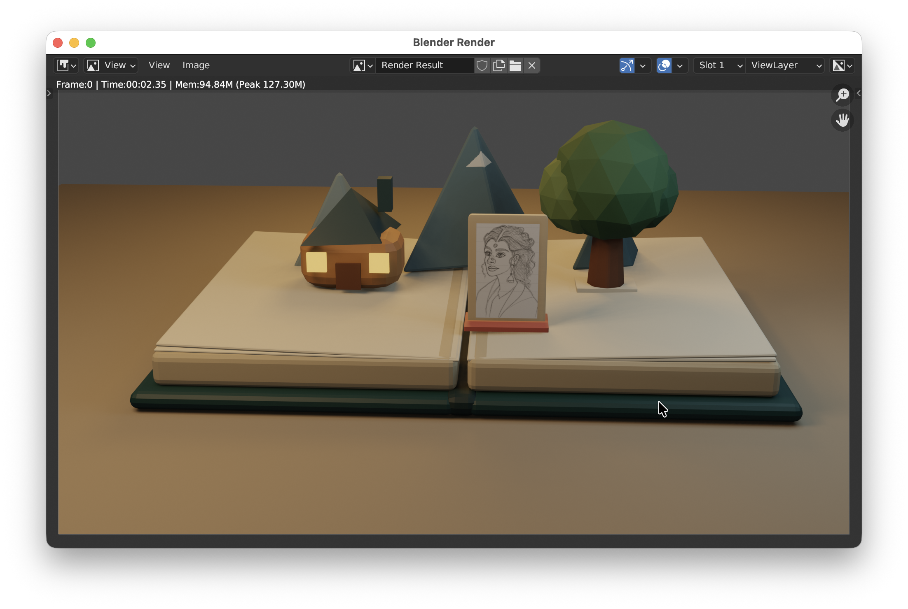
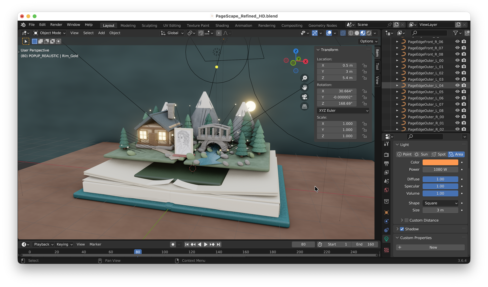
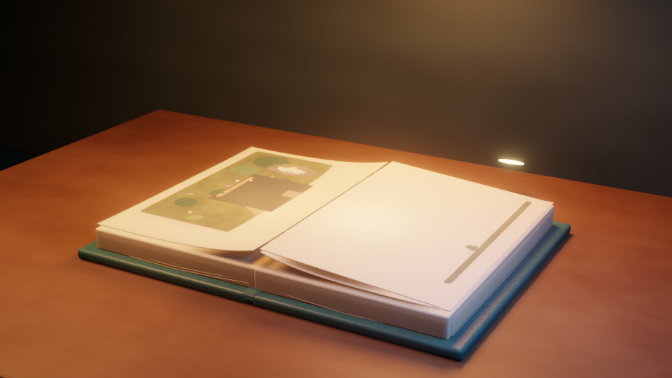
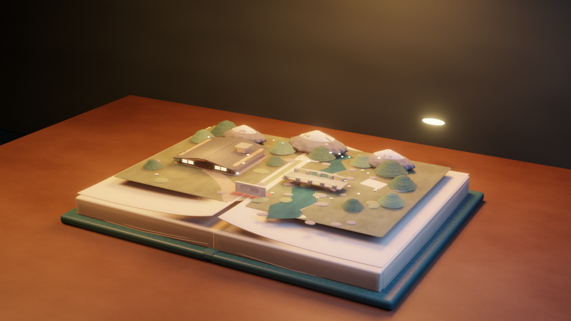
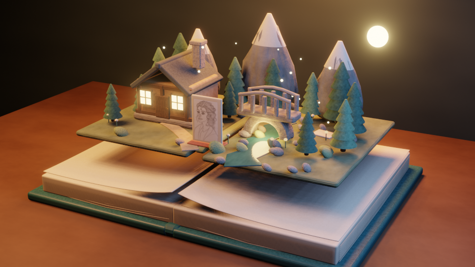

COMP5415 · Multimedia Project Prototype
A book built
to be entered.
PageScape turns a physical pop-up book into the threshold of an explorable story. This page uses the actual model—not a generated campaign image—as its interface.
01 · The foundation
The homework became a production system.
The first book established scale, page structure and the pop-up principle. The assignment rebuilds it with curved paper, visible page strata and a landscape designed as editable geometry.
- Retained
- Original book meshes + character artwork
- Rebuilt
- Pages, terrain, cottage, bridge, stream and forest

02 · Designed as parts
Detail comes from repeatable rules.
The refined world demonstrates the modelling techniques assessed in the unit: custom meshes, bevel and solidify modifiers, procedural materials, controlled repetition and level-of-detail choices.
- Arrayroof shingles
- Subdivision + displacementmountains
- Custom ribbon meshwinding water
- Repeated assembliestwelve pine trees

03 · One reveal, three states
The animation moves from image to object.
The world starts flat, rises with the page and settles as a complete miniature.



04 · Working interaction
Now leave the page behind.
The final state loads a separate, human-scale Blender environment: walk through the forest, cross the river, approach the cottage and watch the animated birds above the valley.
Web prototype · no generated scene imagery